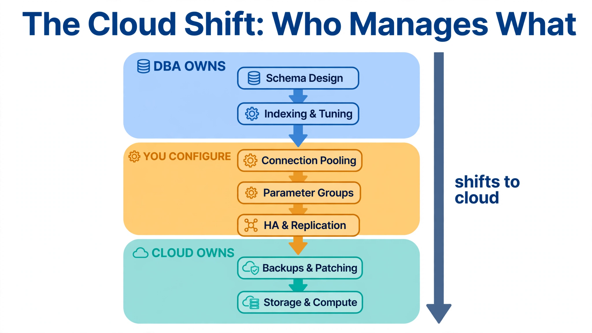

Chapter 1: Why Cloud Databases Changed Everything
If you have spent years managing SQL Server failover clusters on bare metal, tuning instances on VMware, or babysitting Always On availability groups through a 2 AM failover, this chapter is your orientation briefing. The cloud did not simply move databases to someone else's hardware — it fundamentally restructured what database engineering means, what DBAs are responsible for, and where the real leverage points are in a modern production system. Before diving into AWS RDS parameter groups or Azure SQL Elastic Pools, you need to understand what changed, what stayed the same, and what you have actually traded away in exchange for managed infrastructure.
---
1.1 The Shift from Infrastructure Owner to Service Consumer
When you managed an on-premises SQL Server 2022 cluster, you owned the entire stack. You decided the Windows Server build, the disk layout (data, log, tempdb, and backup volumes on separate LUNs), the storage controller queue depth, the NIC teaming configuration, and the power plan. You configured startup parameters and trace flags in SQL Server Configuration Manager. You managed logins, server roles, and endpoint permissions line by line. Failure meant your pager went off. Victory meant the database stayed up without anyone noticing.
Cloud managed databases make a different bargain. AWS RDS, Azure SQL Database, and Google Cloud SQL take ownership of the infrastructure layer — hardware provisioning, OS patching, storage volume management, and replication topology — and hand you back a connection string and a set of configuration knobs that are smaller than what you had before, but much faster to operate.
This is not a demotion. It is a role shift. The DBA who spent 40% of their week on storage provisioning tickets and OS-level tuning can redirect that time toward query optimization, schema design, connection pooling strategy, and multi-region availability architecture. The work that was invisible to the business becomes visible. The work that was visible to the business — keeping the database running — gets absorbed into a service-level agreement with a cloud provider.
The practical consequence is that you need to internalize the boundary between what you control and what the managed service controls. That boundary is different on every platform, and it shifts with every major release. On RDS for SQL Server, you cannot set startup parameters or trace flags the way you would in SQL Server Configuration Manager — only the options and parameters AWS exposes through parameter groups and option groups are available, and SQL Server Agent is not offered at all. On Azure SQL Database, you cannot access the underlying SQL Server instance with a sysadmin login the way you would on a self-managed instance. On Cloud SQL for SQL Server, you cannot use features that require OS-level access, and job scheduling has to move off SQL Server Agent to Cloud Scheduler.
Knowing where the wall is before you hit it at 2 AM is the entire point of Chapter 1.
---
1.2 What Managed Services Actually Manage
The phrase "managed database" gets used loosely. Here is a concrete breakdown of what each major cloud platform actually takes off your plate, and where the line is drawn.
Infrastructure management is fully handled across all three platforms: AWS, Azure, and GCP provision the underlying compute, attach storage, configure the network interfaces, and run the hypervisor or bare-metal allocation. You never SSH into the host running your RDS instance. You never run fdisk on an Azure SQL storage volume. This is non-negotiable and non-configurable.
OS patching is managed by the provider on a schedule you can influence but not fully control. RDS maintenance windows let you specify a preferred day and time for minor version upgrades and OS patches, but AWS reserves the right to apply security patches outside that window when the vulnerability is severe enough. Azure SQL uses a similar maintenance window configuration. If your compliance posture requires knowing every patch that touches a database host, cloud managed services require additional audit tooling — the provider's patch logs are available through CloudTrail on AWS and Azure Monitor on Azure, but they are not in the same format as a traditional change management ticket.
High availability and replication is where managed services deliver their most significant operational value. A Multi-AZ RDS deployment synchronously replicates your data to a standby in a different Availability Zone. Failover is automatic and AWS states it typically completes within one to two minutes for standard RDS Multi-AZ. Compare that to a manual Pacemaker/Corosync cluster failover on-premises, where timing depends heavily on how well-rehearsed the runbook is — a well-tested setup might land in a similar window, while an untested one can turn into an hour on the phone with a vendor.
Backups are automated, with point-in-time recovery available up to the retention period you configure (1–35 days on RDS, 1–35 days on Azure SQL, 1–35 days on Cloud SQL). The backup mechanism itself is managed — on RDS for SQL Server, automated backups combine storage-level snapshots with continuous transaction log uploads to S3. You do not run BACKUP DATABASE manually. You do not schedule your own log backups or manage log shipping. You configure a retention period and trust the service.
What managed services do not manage: your schema design, your index strategy, your query plans, your connection pool sizing, your application-level caching logic, your data lifecycle policies, and your disaster recovery architecture above the single-region level. These remain entirely your responsibility, and they represent the highest-leverage work a cloud DBA performs.

Read it top to bottom: the blue zone is work that never leaves your desk — schema design, indexing, and query tuning are yours no matter where the database lives. The amber zone is the shared middle ground where you configure but the platform executes: connection pooling, parameter groups, and HA topology. Everything in the teal zone — backups, patching, storage, and compute — is fully owned by the cloud provider, which is exactly why your job shifts from operator to architect.
*The layers a cloud DBA still owns (top) versus the layers the provider takes over (bottom). Parameter configuration sits in between: you set the values, but the provider enforces which ones are exposed.*
---
1.3 The Configuration Model: Parameter Groups, Server Parameters, and Database Flags
On-premises SQL Server is configured through sp_configure, trace flags, startup parameters, and the SQL Server Configuration Manager. When you move to managed databases, these familiar mechanisms are replaced by provider-specific configuration abstractions — parameter groups, option groups, database flags, and database-scoped configurations.
AWS RDS Parameter Groups are collections of engine parameters that you apply to one or more DB instances. For RDS for SQL Server they map to the instance-level settings you would normally change with sp_configure — max server memory, cost threshold for parallelism, max degree of parallelism, fill factor, and the like. Some parameters are static (requiring a reboot to apply), and some are dynamic (applied immediately). The critical difference from on-premises is that some capabilities are locked entirely — you cannot add arbitrary trace flags or startup parameters, and several features (SQL Server Agent, replication publisher roles, native linked-server providers beyond the supported set) are simply unavailable on the managed surface.
Here is how you create and apply a custom parameter group for RDS for SQL Server using the AWS CLI:
# Create a custom parameter group for SQL Server 2022 (Standard Edition)
aws rds create-db-parameter-group \
--db-parameter-group-name prod-sql2022-tuned \
--db-parameter-group-family sqlserver-se-16.0 \
--description "Production SQL Server 2022 tuned parameters" \
--region us-east-1
# Tune the settings you would normally change with sp_configure.
# RDS supports a formula language ({DBInstanceClassMemory/...}) so the
# parameter group stays portable across instance classes.
aws rds modify-db-parameter-group \
--db-parameter-group-name prod-sql2022-tuned \
--parameters \
"ParameterName=max server memory (MB),ParameterValue={DBInstanceClassMemory/1048576}*3/4,ApplyMethod=pending-reboot" \
"ParameterName=cost threshold for parallelism,ParameterValue=50,ApplyMethod=immediate" \
"ParameterName=max degree of parallelism,ParameterValue=8,ApplyMethod=immediate" \
"ParameterName=fill factor (%),ParameterValue=90,ApplyMethod=pending-reboot" \
"ParameterName=optimize for ad hoc workloads,ParameterValue=1,ApplyMethod=immediate" \
--region us-east-1
# Apply the parameter group to an existing RDS for SQL Server instance
aws rds modify-db-instance \
--db-instance-identifier prod-sql-primary \
--db-parameter-group-name prod-sql2022-tuned \
--apply-immediately \
--region us-east-1Notice the {DBInstanceClassMemory/1048576} formula. RDS resolves these formulas against the actual memory of whatever instance class the parameter group is applied to. This is actually a feature — the parameter group becomes portable across instance sizes without manual recalculation — but it is a mental model shift if you are used to running sp_configure 'max server memory (MB)', 98304; RECONFIGURE; with a hard-coded number on each host.
Azure SQL configuration splits into two layers. For Azure SQL Managed Instance, server-level settings are managed through the portal or the az sql mi CLI; for Azure SQL Database, most tuning happens through database-scoped configurations run as T-SQL. The CLI and T-SQL equivalents:
# Azure CLI: list server configuration options on a Managed Instance
az sql mi show \
--resource-group prod-rg \
--name prod-sqlmi \
--query "{vCores: vCores, storageSizeInGB: storageSizeInGB, licenseType: licenseType}"
# For Azure SQL Database, use database-scoped configurations (via sqlcmd or SSMS)
# -- set parallelism and cardinality estimator behavior per database:
# ALTER DATABASE SCOPED CONFIGURATION SET MAXDOP = 4;
# ALTER DATABASE SCOPED CONFIGURATION SET LEGACY_CARDINALITY_ESTIMATION = OFF;
# ALTER DATABASE SCOPED CONFIGURATION SET QUERY_OPTIMIZER_HOTFIXES = ON;
# Query Store is on by default on Azure SQL Database — configure retention:
# ALTER DATABASE [production] SET QUERY_STORE
# (OPERATION_MODE = READ_WRITE, CLEANUP_POLICY = (STALE_QUERY_THRESHOLD_DAYS = 30));Google Cloud SQL uses database flags, which are passed at instance creation or modification time. Cloud SQL for SQL Server exposes a focused set of SQL Server flags — most SQL Server tuning on GCP happens through the console or sp_configure inside the instance:
# GCP CLI: Set database flags on a Cloud SQL for SQL Server instance
gcloud sql instances patch prod-sql-instance \
--database-flags \
max degree of parallelism=4 \
--project my-prod-project
# Some flags require an instance restart — gcloud will warn you
# Check which flags are supported and whether restart is needed
gcloud sql instances describe prod-sql-instance \
--project my-prod-project \
--format="json(settings.databaseFlags)"
# Everything else is T-SQL inside the instance, e.g.:
# EXEC sp_configure 'cost threshold for parallelism', 50; RECONFIGURE;A production gotcha shared across all three platforms: you will encounter settings that exist on-premises but are either locked, unavailable, or behave differently in managed environments. On RDS for SQL Server, only a curated subset of sp_configure options are exposed, and features like SQL Server Agent and replication publisher roles are unavailable entirely. On Cloud SQL for SQL Server, cross-database queries and linked servers have restrictions you would never hit on a self-managed instance. On Azure SQL Database, you cannot use DBCC FREEPROCCACHE without specific permissions, and DBCC DROPCLEANBUFFERS is not available at all in the serverless tier.
---
1.4 Networking and Security: The New Perimeter
The most jarring transition for on-premises DBAs is often not the configuration model — it is the networking and authentication model. On-premises, your security perimeter is relatively straightforward: SQL Server logins and Windows authentication control who can connect, Windows Firewall or network ACLs control which IPs can reach port 1433, and TLS is configured in SQL Server Configuration Manager with certificates you manage yourself.
Cloud managed databases replace this with layered abstractions: VPCs, security groups, private endpoints, IAM authentication, and certificate authorities managed by the cloud provider. Each layer is more powerful and more auditable than what you had before — but only if you understand how they compose.
VPC placement is the first decision. Every RDS instance, Azure SQL server, or Cloud SQL instance should live inside a private subnet with no public accessibility. Public accessibility should be off by default. On RDS, this means creating the DB subnet group from private subnets only:
# Create an RDS subnet group using private subnets only
aws rds create-db-subnet-group \
--db-subnet-group-name prod-db-subnet-group \
--db-subnet-group-description "Private subnets for production RDS" \
--subnet-ids subnet-0a1b2c3d4e5f subnet-0f5e4d3c2b1a \
--region us-east-1
# Create the RDS instance with no public access
aws rds create-db-instance \
--db-instance-identifier prod-sql-primary \
--db-instance-class db.r6i.2xlarge \
--engine sqlserver-se \
--engine-version 16.00 \
--master-username dbadmin \
--master-user-password "$(aws secretsmanager get-secret-value \
--secret-id prod/sqlserver/master-password \
--query SecretString --output text)" \
--db-subnet-group-name prod-db-subnet-group \
--vpc-security-group-ids sg-0123456789abcdef0 \
--no-publicly-accessible \
--multi-az \
--allocated-storage 500 \
--storage-type gp3 \
--storage-encrypted \
--region us-east-1IAM authentication replaces the password-in-config-file pattern that was acceptable on-premises and is a liability in cloud environments. With RDS IAM authentication, database users are mapped to IAM roles, and the authentication token is generated on the fly with a 15-minute validity window. No long-lived passwords stored in application config files. What you used to manage with SQL Server logins, contained database users, and Windows authentication groups on-premises, you now manage with IAM policies and the rds_iam_roles mapping.
# Python: Generate an IAM auth token and connect to RDS for SQL Server
import boto3
import pyodbc
from botocore.exceptions import ClientError
def get_rds_iam_token(hostname: str, port: int, username: str, region: str) -> str:
"""Generate a short-lived IAM authentication token for RDS."""
client = boto3.client('rds', region_name=region)
token = client.generate_db_auth_token(
DBHostname=hostname,
Port=port,
DBUsername=username,
Region=region
)
return token
def connect_with_iam_auth():
hostname = "prod-sql-primary.xxxxxxxxxxxx.us-east-1.rds.amazonaws.com"
port = 1433
username = "app_readonly"
region = "us-east-1"
database = "production"
# Token is valid for 15 minutes — generate fresh per connection
token = get_rds_iam_token(hostname, port, username, region)
conn_str = (
f"DRIVER={{ODBC Driver 18 for SQL Server}};"
f"SERVER={hostname},{port};DATABASE={database};"
f"UID={username};PWD={token};Encrypt=yes;"
f"TrustServerCertificate=no"
)
return pyodbc.connect(conn_str)
# The IAM role attached to the EC2/Lambda/ECS task must have:
# rds-db:connect permission on the specific DB user resource ARN
# arn:aws:rds-db:us-east-1:123456789012:dbuser:prod-sql-primary/app_readonly
#
# NOTE: the SQL Server login must already exist on the instance and be
# mapped to the IAM role — IAM auth does not create logins for you.Private Link and Private Endpoints eliminate the exposure of database traffic to the public internet entirely, even within a VPC. Azure SQL Private Link creates a private IP in your VNet that maps to the Azure SQL server — traffic never leaves Microsoft's backbone. AWS PrivateLink for RDS works similarly. On GCP, Cloud SQL's Private IP option keeps all traffic within the VPC.
The mental model shift: you are no longer thinking about firewall rules as a flat list of IP-to-port mappings. You are thinking about IAM principals, VPC routing, and service endpoints as a layered security architecture. The good news is that this architecture is auditable in ways that a text file on a server never was.
---
1.5 Operational Observability: From DMVs to CloudWatch and Beyond
On a self-managed SQL Server instance, your observability toolkit is the dynamic management views (sys.dm_exec_requests, sys.dm_exec_query_stats, sys.dm_os_wait_stats), Extended Events, Query Store, the SQL Server error log, and whatever you have wired up with Prometheus and Grafana. You own the data collection pipeline end to end.
Cloud managed databases provide observability through their native monitoring platforms — Amazon CloudWatch for RDS, Azure Monitor for Azure SQL, and Cloud Monitoring for Cloud SQL — and these platforms are significantly more powerful at the infrastructure level than anything you ran on-premises. They are also more limited at the database engine internals level, because you do not own the host.
CloudWatch for RDS exposes metrics at 1-minute granularity by default (10-second granularity with Enhanced Monitoring enabled, which adds a small cost). Key metrics you should always alarm on in production:
# Create a CloudWatch alarm for RDS CPU exceeding 80% for 10 minutes
aws cloudwatch put-metric-alarm \
--alarm-name "prod-rds-cpu-high" \
--alarm-description "RDS CPU above 80% for 10 minutes" \
--metric-name CPUUtilization \
--namespace AWS/RDS \
--statistic Average \
--period 300 \
--evaluation-periods 2 \
--threshold 80 \
--comparison-operator GreaterThanThreshold \
--dimensions Name=DBInstanceIdentifier,Value=prod-sql-primary \
--alarm-actions arn:aws:sns:us-east-1:123456789012:prod-dba-alerts \
--ok-actions arn:aws:sns:us-east-1:123456789012:prod-dba-alerts \
--region us-east-1
# Create alarm for availability-group replica lag on a self-managed secondary
# (RDS for SQL Server has no read replicas, so lag monitoring for read
# scale-out lives on your AG secondaries or Azure Hyperscale replicas)
aws cloudwatch put-metric-alarm \
--alarm-name "prod-ag-secondary-lag-high" \
--alarm-description "AG secondary redo lag above 30 seconds" \
--metric-name AGRedoLagSeconds \
--namespace SQLServer/Custom \
--statistic Maximum \
--period 60 \
--evaluation-periods 3 \
--threshold 30 \
--comparison-operator GreaterThanThreshold \
--dimensions Name=ReplicaName,Value=prod-sql-ag-secondary-1 \
--alarm-actions arn:aws:sns:us-east-1:123456789012:prod-dba-alerts \
--region us-east-1The metrics that matter most in production cloud databases — FreeStorageSpace, DatabaseConnections, ReadLatency, WriteLatency, ReadIOPS, FreeableMemory — map directly to the concerns you had on-premises, but the collection and alerting infrastructure is provided rather than self-built.
What you lose is raw access to the operating system metrics underneath. Enhanced Monitoring on RDS gives you per-process CPU and memory breakdowns through an agent that runs on the DB host and ships to CloudWatch Logs, but it is read-only telemetry — you cannot act on it by tuning kernel parameters. You observe what the managed service gives you, and you tune within the parameters it exposes.
Performance Insights, available on RDS, is the closest cloud equivalent to querying sys.dm_exec_query_stats joined to a wait-statistics analysis. It shows you top SQL by load, broken down by wait events (CPU, I/O, lock, etc.), across a 7-day free window or up to 2 years with the paid tier. For most production workload analysis, it replaces the combination of periodic DMV snapshots and manual wait-stat diffing you ran on-premises.
---
1.6 The Economics of Cloud Databases: What You Pay For and What It Costs You
No chapter on why cloud databases changed everything would be complete without an honest discussion of cost, because cost is where cloud database decisions most often go wrong. On-premises infrastructure is a capital expense (CapEx) that deprecates over a hardware lifecycle. Cloud databases are an operating expense (OpEx) that runs indefinitely and scales directly with usage. This changes how you make architectural decisions.
An db.r6i.4xlarge RDS instance (16 vCPU, 128 GB RAM) carries a meaningful on-demand hourly rate — check current AWS pricing for your region and engine rather than relying on a number printed in a book, since rates change over time. A Multi-AZ deployment roughly doubles the compute cost compared to single-AZ, because you are paying for a synchronous standby that stays warm and ready. Adding several terabytes of gp3 storage adds a proportional monthly storage cost on top of compute. Adding a readable secondary for read scale-out (an Always On secondary on EC2, or a Hyperscale named replica on Azure) adds its own compute line item on top.
Before you reach for the largest instance class, understand what you are buying. An r6i.4xlarge with 128 GB RAM is appropriate when your working set — the data actively accessed by your queries — genuinely approaches that size. If your total database is 200 GB but your hot working set is 20 GB, a smaller instance such as an r6i.xlarge (32 GB RAM, a fraction of the 4xlarge's cost) with appropriate indexing will outperform an r6i.4xlarge with poor query patterns.
Reserved Instances can meaningfully reduce RDS costs compared to on-demand pricing, with the exact discount depending on the term (1-year vs. 3-year) and payment option — check current AWS pricing rather than budgeting off a fixed percentage. For production databases with stable workloads, Reserved Instances (or Savings Plans) are not optional — they are the responsible operational choice.
The cost comparison with on-premises is more complex than the cloud vendors' calculators suggest. You need to include fully loaded infrastructure costs: hardware amortization, data center space and power, network equipment, OS licensing (for Windows-based databases), DBA time spent on patching and hardware maintenance, and the cost of unplanned downtime. When all of these are included honestly, cloud managed databases are frequently cost-competitive or cheaper for mid-sized organizations that lack economies of scale in hardware procurement. For very large deployments — hundreds of nodes, petabytes of data — the calculus often favors hybrid or private cloud approaches, which is why this book exists rather than one that simply tells you to migrate everything.
The Terraform pattern below represents the production baseline for an RDS deployment — the minimum configuration a production DBA should require before any database goes live:
# Terraform: Production-grade RDS for SQL Server baseline
resource "aws_db_instance" "prod_sqlserver" {
identifier = "prod-sql-primary"
engine = "sqlserver-se"
engine_version = "16.00"
instance_class = "db.r6i.2xlarge"
allocated_storage = 500
max_allocated_storage = 2000 # Enable storage autoscaling up to 2TB
storage_type = "gp3"
storage_encrypted = true
kms_key_id = aws_kms_key.rds_encryption_key.arn
db_name = "production"
username = "dbadmin"
password = data.aws_secretsmanager_secret_version.db_master_password.secret_string
multi_az = true
db_subnet_group_name = aws_db_subnet_group.prod.name
vpc_security_group_ids = [aws_security_group.rds_sg.id]
publicly_accessible = false
parameter_group_name = aws_db_parameter_group.prod_sql2022.name
option_group_name = aws_db_option_group.prod_sqlserver.name # e.g. SQLSERVER_BACKUP_RESTORE for native backup to S3
backup_retention_period = 14
backup_window = "03:00-04:00"
maintenance_window = "sun:04:00-sun:05:00"
auto_minor_version_upgrade = false # Control upgrades explicitly in production
performance_insights_enabled = true
performance_insights_retention_period = 731 # 2 years
monitoring_interval = 60 # Enhanced Monitoring every 60 seconds
monitoring_role_arn = aws_iam_role.rds_enhanced_monitoring.arn
enabled_cloudwatch_logs_exports = ["error", "agent"]
deletion_protection = true
skip_final_snapshot = false
final_snapshot_identifier = "prod-sqlserver-final-snapshot"
tags = {
Environment = "production"
Team = "platform-data"
CostCenter = "engineering"
}
}Every parameter in that Terraform block represents a decision that a production DBA needs to make consciously and own. auto_minor_version_upgrade = false means you control when minor version upgrades happen — the default is true, which lets AWS apply them during your maintenance window without further approval. In a regulated environment or one with strict change management, that default will cause you problems. deletion_protection = true means you cannot accidentally destroy a production database with a terraform destroy or a misclick in the console. performance_insights_retention_period = 731 keeps two years of query performance history, which matters when you are debugging a regression that appeared after a deployment six weeks ago.
These are not configuration details — they are operational commitments. Infrastructure as code forces you to make them explicit.
---
1.7 What Stayed the Same: The Fundamentals Don't Move
After four sections on what changed, it is worth being direct about what did not change, because this is where many cloud migration projects go wrong. Engineers assume that because the infrastructure layer is managed, the database layer is somehow simpler. It is not.
Query optimization is unchanged. A table scan on 500 million rows costs the same on RDS for SQL Server as it does on a bare-metal server running the same SQL Server version with the same data. The query optimizer has the same logic, the same cost model, the same sensitivity to stale statistics. Actual execution plans look identical. The fix is the same: appropriate indexing, updated statistics, rewritten queries. The cloud provider does not optimize your queries.
-- SQL Server: Top resource-consuming queries (works on RDS SQL Server, Azure SQL identically)
SELECT TOP 20
qs.execution_count,
qs.total_logical_reads,
qs.total_logical_reads / NULLIF(qs.execution_count, 0) AS avg_logical_reads,
qs.total_worker_time / 1000 AS total_cpu_ms,
qs.total_elapsed_time / 1000 AS total_elapsed_ms,
SUBSTRING(st.text, (qs.statement_start_offset / 2) + 1,
((CASE qs.statement_end_offset WHEN -1 THEN DATALENGTH(st.text)
ELSE qs.statement_end_offset END - qs.statement_start_offset) / 2) + 1) AS statement_text,
qp.query_plan
FROM sys.dm_exec_query_stats AS qs
CROSS APPLY sys.dm_exec_sql_text(qs.sql_handle) AS st
OUTER APPLY sys.dm_exec_query_plan(qs.plan_handle) AS qp
ORDER BY qs.total_logical_reads DESC;-- SQL Server: Missing index DMV analysis
SELECT
DB_NAME(mid.database_id) AS database_name,
OBJECT_NAME(mid.object_id, mid.database_id) AS table_name,
migs.avg_total_user_cost * migs.avg_user_impact * (migs.user_seeks + migs.user_scans) AS improvement_measure,
'CREATE INDEX [IX_' + OBJECT_NAME(mid.object_id, mid.database_id)
+ '_' + REPLACE(REPLACE(ISNULL(mid.equality_columns, ''), '[', ''), ']', '')
+ CASE WHEN mid.inequality_columns IS NOT NULL THEN '_' + REPLACE(REPLACE(mid.inequality_columns, '[', ''), ']', '') ELSE '' END
+ ']'
+ ' ON ' + mid.statement
+ ' (' + ISNULL(mid.equality_columns, '')
+ CASE WHEN mid.equality_columns IS NOT NULL AND mid.inequality_columns IS NOT NULL THEN ',' ELSE '' END
+ ISNULL(mid.inequality_columns, '') + ')'
+ ISNULL(' INCLUDE (' + mid.included_columns + ')', '') AS create_index_statement,
migs.user_seeks,
migs.user_scans,
migs.last_user_seek,
mid.equality_columns,
mid.inequality_columns,
mid.included_columns
FROM
sys.dm_db_missing_index_groups mig
INNER JOIN sys.dm_db_missing_index_group_stats migs
ON migs.group_handle = mig.index_group_handle
INNER JOIN sys.dm_db_missing_index_details mid
ON mig.index_handle = mid.index_handle
WHERE
migs.avg_total_user_cost * migs.avg_user_impact * (migs.user_seeks + migs.user_scans) > 10
ORDER BY
improvement_measure DESC;Both queries work without modification against the equivalent managed service. The DMV and catalog views are the same engine, running in the same way, just on infrastructure you do not own.
Transaction isolation and locking behavior is unchanged. Deadlocks happen on RDS for SQL Server for exactly the same reasons they happen on-premises. Lock escalation, blocking chains, and tempdb contention under snapshot isolation work identically. Row-versioning behavior is the same whether the database runs in your data center or in a managed service — enabling READ_COMMITTED_SNAPSHOT still moves version-store pressure into tempdb. If your application fragments indexes with heavy random inserts and you never rebuild or reorganize, the managed service will not do index maintenance for you either.
Connection management is unchanged — and arguably more important. SQL Server's worker-thread and session model means that thousands of concurrent connections consume substantial memory and scheduler overhead regardless of whether the instance runs on RDS, Azure SQL, or bare metal. On-premises, the instinct was often to raise the connection limit and hope for the best. In cloud environments, especially when running many Lambda functions or microservices that each hold database connections, this problem becomes acute. Proper connection pooling in the application tier — or RDS Proxy, which we cover in Chapter 10 — is not optional for architectures with more than a few dozen concurrent clients.
Backup recovery time must be tested. Automated backups are only valuable if you have verified, under conditions resembling production, that you can actually restore from them in the time your SLA requires. This does not change because backups are managed. What changes is the restoration mechanism — you are restoring from RDS snapshots or native backups to S3 rather than running RESTORE DATABASE from your own backup files manually — but the discipline of testing restores remains entirely your responsibility.
---
1.8 Choosing a Platform: RDS, Azure SQL, and Cloud SQL
This book covers all three major clouds, and readers who are evaluating where to run their workloads deserve a direct framework for that decision. This is not a comprehensive feature comparison — those go stale within months — but a durable architectural framing.
Stick with your existing ecosystem first. If your organization is deeply invested in AWS — IAM, VPCs, CloudFormation, existing RDS instances — the switching cost to Azure or GCP is significant and the marginal benefit is usually small. Conversely, if your analytics workload already runs on BigQuery, Cloud SQL for SQL Server for transactional data keeps your data gravity in GCP. Platform consistency reduces operational complexity, and operational complexity is where production incidents are born.
Match the service tier to your operational maturity. For SQL Server workloads, the choice is between RDS for SQL Server and Azure SQL: RDS for SQL Server keeps you closest to the self-managed SQL Server you already know — same edition model, same T-SQL surface, same backup semantics — while Azure SQL Database and Managed Instance trade some compatibility for deeper platform integration. If you are migrating an existing on-premises SQL Server workload and want the fewest unknowns, RDS for SQL Server (or SQL Server on an EC2/VM you manage yourself) reduces the number of surprises.
Azure SQL Database vs. Azure SQL Managed Instance vs. SQL Server on Azure VM is a choice about how much of the instance you need to keep, covered in depth in Chapter 13. If your application was written for SQL Server — T-SQL stored procedures, SQL Server Agent jobs, cross-database queries, linked servers, existing SSRS or SSIS dependencies — Managed Instance or SQL Server on VM is the natural target. If the workload is greenfield or already modernized, Azure SQL Database provides the most managed experience with the lowest operational overhead.
Google Cloud SQL for SQL Server vs. SQL Server on Compute Engine follows the managed-versus-self-managed pattern: Cloud SQL is SQL Server with managed infrastructure — the most compatible option for straightforward migrations — while SQL Server on Compute Engine gives you full OS and instance control at the cost of owning patching, availability, and backups yourself. We cover both in depth in Chapter 19.
The honest answer is: for most production SQL Server workloads that are not at extreme scale, RDS for SQL Server, Azure SQL Managed Instance, or Cloud SQL for SQL Server are excellent choices that will not limit you. Evaluate Azure SQL Hyperscale or a self-managed deployment on EC2/Compute Engine when you have specific requirements — storage growth beyond what standard managed services handle cost-effectively, read scale beyond what a few replicas provide, or sub-thirty-second failover RTO — and when your team has the operational capacity to understand the differences.
---
1.9 The DBA's New Toolkit
The tools change when the platform changes. A production cloud DBA in 2024 operates with a toolkit that is meaningfully different from the on-premises DBA toolkit, and the difference is not just the addition of cloud consoles.
Infrastructure as code (IaC) is not optional. Every database instance, parameter group, subnet group, security group, and IAM policy should be defined in Terraform, Pulumi, or CloudFormation. Clicking through the AWS console to create a production database is the equivalent of hand-editing server settings on a box that has no change management — it will work until it doesn't, and you will have no record of what you did. Chapter 2 covers Terraform patterns for RDS in depth.
The CLI is your command line. aws, az, and gcloud replace the SSH session. Being fluent in the CLI for your primary platform is as important as knowing sqlcmd commands. The examples throughout this book use CLI commands intentionally — they are scriptable, auditable, and version-controllable in ways that console clicks are not.
Secrets management replaces config files. AWS Secrets Manager, Azure Key Vault, and GCP Secret Manager are the production-grade replacements for the DATABASE_URL environment variable that contains a plaintext password. Rotation policies, audit logs, and IAM-controlled access make them categorically more secure. We cover integration patterns in Chapter 5.
Cost monitoring is a DBA function. On-premises, the DBA rarely owned infrastructure costs — that was procurement and finance's problem. In cloud environments where database spend is metered hourly and can surprise you at month-end, monitoring your RDS or Azure SQL spend against budget is part of database operations. AWS Cost Explorer, Azure Cost Management, and GCP Billing all provide service-level breakdowns that let you see exactly what your database fleet is costing. Setting budget alerts before they are needed, not after the first unexpected invoice, is the professional approach.
Documentation lives in the provider's release notes. SQL Server cumulative update release notes are the same whether you are on-premises or on RDS. But RDS-specific behavior, parameter limitations, and maintenance policies live in AWS's RDS documentation and change independently of SQL Server versions. Subscribing to AWS RDS release notes, Azure SQL Blog, and Cloud SQL release notes is operational discipline — these are the channels where you learn that a new behavior will affect your production instances before it affects your production instances.
---
Key Takeaways
Test yourself on this chapter
5 questions · instant scoring · explanations included
QueryOptimizer — Self-Hosted SQL Performance Workbench
Execution-plan visualizer · Index advisor · Slow query dashboard · Built for SQL Server